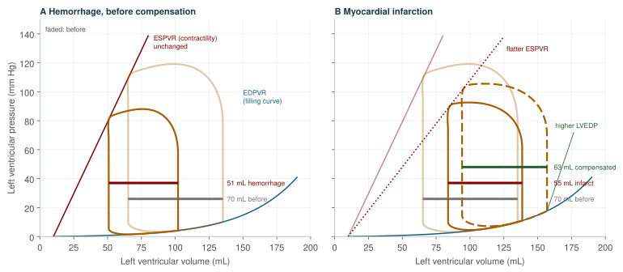
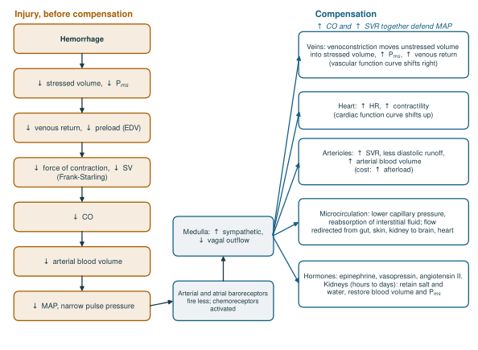
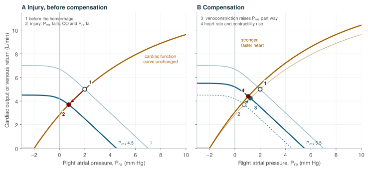
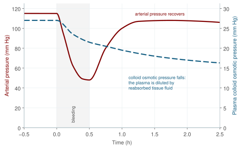
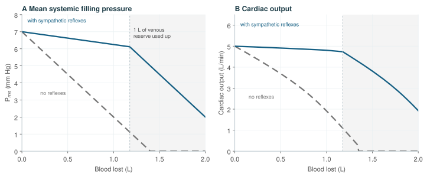
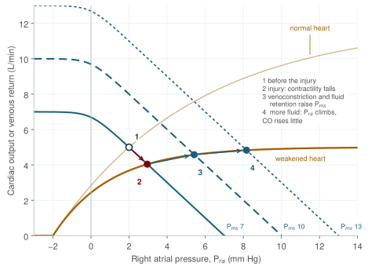
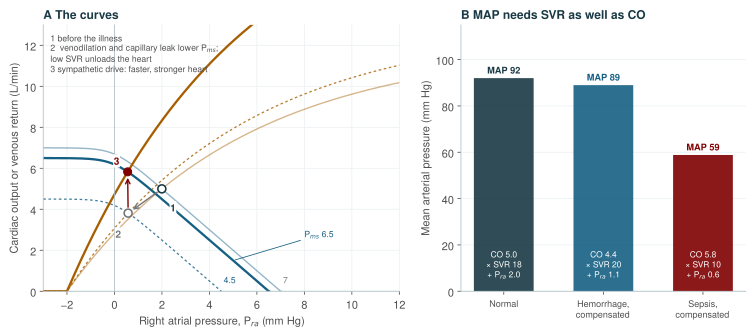

14 Cardiovascular Integration and Adaptation
Hemorrhage, heart failure, tamponade and septic shock on the cardiac and vascular function curves
- Use CO = VR, Pms and the cardiac and vascular function curves to find the operating point.
- Predict how hemorrhage, heart failure, tamponade and septic shock move the cardiac and vascular function curves, before and after compensation.
- Draw hemorrhage and myocardial infarction on pressure-volume loops.
- Name the compensating mechanisms in hemorrhage, including the two kinds of autotransfusion (from the veins and from the tissues), and say what each compensation costs.
- Explain why about 1 L of blood loss can be compensated and 2 L cannot.
- Describe the CNS ischemic response.
- Explain why positive-pressure ventilation can drop the blood pressure of a patient compensating for hemorrhage.
- Work from a new operating point back to its cause.
Names, dates and the exact values in figure captions are context, not things to memorize.
By now you have the parts. The heart’s pumping is summarized by the cardiac function curve, the vessels’ return of blood by the vascular function curve, and the reflexes that adjust both by the baroreceptor reflex. This lecture puts them to work on the problems they were built for. Something goes wrong: blood is lost, the heart weakens or cannot fill, or the vessels dilate. What changes first, what does the body do about it, and what does the fix cost? The same few rules answer every case, and the exercise chapter that follows applies them to a healthy person pushed to the limit (Cardiovascular Adaptation to Exercise).
14.1 The rules you already have
The Control of Cardiac Output chapter built the tools: CO = VR at steady state, VR = (Pms − Pra)/RVR, and the operating point where the cardiac and vascular function curves cross (the small groups call the pair “Guyton curves”). In this course, changes in RVR are treated as minor and ignored, except in exercise, so a change in venous tone is drawn as a change in Pms, a parallel shift of the vascular function curve. The curves give CO and Pra but not blood pressure; for that you need SVR, from MAP − Pra = CO × SVR. The small groups also use a “single pump” model in which left and right atrial pressures are equal, so keep in mind that pulmonary edema depends on left atrial pressure.
14.2 Three states: before, injury, compensation
Every case in this chapter has the same three states, and most mistakes come from mixing them up:
- Before the insult. The person’s own normal operating point.
- Injury, before compensation. Only the curve the insult acts on has moved. No reflex has acted yet.
- After compensation. The reflexes have moved one or both curves, usually including the curve the insult did not touch.
The small groups ask you to label baseline, injury and compensation on every drawing. “Immediately after” an insult, before any reflex, is state 2. Once the reflexes have acted, expect state 3: a faster heart rate and a higher Pms than in state 2.
14.3 Hemorrhage
The injury lecture opens with a man who cuts a large artery and bleeds briskly. How will his autonomic nervous system defend his cardiac output, and how will it defend his mean arterial pressure?
14.3.1 The injury
Blood loss removes stressed volume, so Pms falls. Figure 14.2 follows the chain on the left, the process diagram the small groups use:
hemorrhage → ↓ Pms → ↓ venous return and preload (EDV) → ↓ force of contraction → ↓ SV → ↓ CO → ↓ arterial blood volume → ↓ BP
Nothing about the heart itself has changed: its contractility and its filling curve are the same. The ventricle simply fills to a smaller end-diastolic volume because less blood comes back, and by Frank-Starling it generates less force and a smaller stroke volume (Figure 14.1 A). Pulse pressure narrows with the smaller stroke volume.


On the curves (Figure 14.3 A), only the vascular function curve moves, to the left. The operating point slides down the unchanged cardiac function curve, so CO and Pra both fall.
14.3.2 The compensating mechanisms
The lecture lists the compensating mechanisms:
- the baroreceptor reflex;
- the chemoreceptor reflex;
- the CNS ischemic response (the slides call it the cerebral ischemic response);
- reabsorption of tissue fluids;
- release of endogenous vasoconstrictors: epinephrine and norepinephrine from the adrenal medulla, vasopressin from the posterior pituitary, and angiotensin II through the renin-angiotensin-aldosterone system;
- renal conservation of salt and water.
The baroreceptor reflex. The arterial (high-pressure) baroreceptors in the carotid sinus and aortic arch fire less as MAP falls, and low-pressure receptors in the atria sense the fall in central blood volume. Sympathetic outflow rises and vagal outflow falls (ANS and Extrinsic Control has the pathway). The response reaches four targets:
- Veins. Venoconstriction moves blood from unstressed to stressed volume, so Pms rises and the vascular function curve shifts right.
- Heart. Heart rate and contractility rise, so the cardiac function curve shifts up.
- Arterioles. Constriction raises SVR, which slows the diastolic runoff of blood from the arteries, so more blood stays in the arterial tree and MAP rises. The price is a higher afterload.
- Microcirculation. Arteriolar constriction lowers capillary hydrostatic pressure and lets interstitial fluid move into the blood (below). Constriction in the gut, skin and kidney sends a larger share of the cardiac output to the brain and heart, whose vessels are under local control.
The chemoreceptor reflex. When arterial pressure falls, flow through the carotid and aortic bodies falls too. Their cells become short of O2 even though arterial PO2 is normal, and with the acidosis of poorly perfused tissue the peripheral chemoreceptors add to sympathetic drive and to breathing. Less flow to the brain lowers the pH of the brain’s extracellular fluid, which stimulates the central chemoreceptors as well.
The CNS ischemic response. If MAP falls below about 50 mm Hg, the brain itself becomes ischemic. The vasomotor neurons of the medullary cardiorespiratory center respond to their own lack of blood flow with an intense sympathetic discharge. It is a last-resort mechanism. It produces the strongest vasoconstriction the body can make, but it starts only when pressure is already dangerously low, and if perfusion of the brainstem fails for long, the vasomotor center itself stops working and outflow collapses.
Hormones and the kidneys. Epinephrine and norepinephrine from the adrenal medulla act within seconds to minutes. Vasopressin and angiotensin II constrict vessels and help the kidneys retain water and salt. Lower renal perfusion and sympathetic activity release renin, and aldosterone increases salt retention. Over hours to days, the retained fluid restores blood volume and Pms.
14.3.3 Mobilizing blood from the veins
The lecture’s summary of the venous response: increased venomotor tone lowers the capacitance of the veins, so more of the blood is stressed volume, and Pms rises. Constriction of the veins of the splanchnic bed (gut and liver) and the skin moves blood from these reservoirs toward the heart, into the central compartment. (The slide lists skin, liver and lungs. The splanchnic veins are the largest reservoir under sympathetic control, course errata entry 14; the lungs are part of the central compartment.) On the slides this is “autotransfusion”: the body transfuses itself from its own veins. In the lecture’s words, the regulation of venomotor tone is one of the principal mechanisms by which the cardiac output is controlled.
On the curves (Figure 14.3 B), take it one curve at a time, as the small groups do:
- Venoconstriction raises Pms part of the way back. The vascular function curve shifts right again, and the operating point climbs back up the cardiac function curve (point 3): CO and Pra both rise from the injured state.
- A faster, stronger heart shifts the cardiac function curve up. The operating point now slides up and to the left along the new vascular function curve (point 4): CO rises further and Pra falls.
- Arteriolar constriction raises SVR. It does not appear on these curves, but it holds MAP up at the reduced CO.

The lecture’s review answers the opening question:
| Defends | Mechanism | Chain |
|---|---|---|
| Cardiac output | Veins | constriction → ↑ Pms → ↑ venous return → ↑ preload → ↑ SV → ↑ CO |
| Cardiac output | Heart | ↑ heart rate and contractility → ↑ CO (less than the rise from Pms) |
| MAP | Veins | ↑ CO (from above) → ↑ arterial blood volume → ↑ MAP |
| MAP | Arteries | constriction → ↑ SVR → ↑ arterial blood volume → ↑ MAP |
The veins do more for cardiac output than the heart does, which is what Figure 14.3 B shows: the step from 2 to 3 is larger than the step from 3 to 4. The net result of a moderate, compensated hemorrhage is a CO below normal, a low Pra, a fast heart rate, an SVR raised enough to make up for the lower CO, and a MAP close to normal.
The ventricle fills from the atrium. It does not “equilibrate with Pms,” and a lower Pms does not make the mitral valve close early; the valve closes when the ventricle starts to contract. After hemorrhage the lower Pms means less venous return and a lower filling pressure, so the ventricle reaches a smaller end-diastolic volume on the same EDPVR (course errata entry 16).
14.3.4 Breathing and positive pressure
Venous return rises during inspiration. The diaphragm descends, pressure in the chest falls around the right atrium and great veins, pressure in the abdomen rises, and blood moves toward the heart. The opposite happens when pressure in the chest is raised. The lecture’s clinical correlation: blood pressure and cardiac output may fall precipitously if a marginally compensated patient is intubated and given positive-pressure ventilation.
↑ intrathoracic pressure → ↑ Pra → ↓ venous return → ↓ RV end-diastolic volume → ↓ RV stroke volume → ↓ CO
Pra rises because the pressure around the heart rises. That cuts the gradient from Pms, so less blood returns. The pressure across the right ventricular wall, which is what fills it, does not rise, so the ventricle fills less. A patient whose pressure is held up by venoconstriction has no reserve left to absorb the loss of venous return.
14.3.5 The microcirculation: reabsorbing tissue fluid
The Starling equation from Microcirculation and Local Control applies here. The course writes it as
\[Q_f = K\left[(P_c - P_i) - \sigma(\pi_c - \pi_i)\right]\]
and the lecture slide writes the same balance as outward pressures (Pc + πi) minus inward pressures (Pi + πc). The lecture contrasts two cases. In severe malnutrition, plasma protein and πc fall, the inward pressure falls, and filtration rises: edema. In a low-volume state such as hemorrhage, arteriolar constriction and the low venous pressure lower Pc, the outward pressure falls, and fluid is reabsorbed from the interstitium into the capillaries.
This reabsorption is a second “autotransfusion,” from the tissues rather than the veins. Up to about 1 L of fluid per hour can be returned to the circulation. The fluid brings little protein with it, so it dilutes the plasma proteins and lowers πc, which slows further reabsorption (Figure 14.4).

14.3.6 Why 1 L can be compensated and 2 L cannot
The course’s numbers explain the cliff. Total blood volume is about 5 L, and about 70% of it is in the veins. Sympathetic venoconstriction can mobilize about 30% of venous volume:
\[5\ \text{L} \times 0.7 \times 0.3 \approx 1\ \text{L}\]
So the veins can put back about 1 L of stressed volume. A hemorrhage of 1 L can be largely made up by venoconstriction, with Pms and venous return held near normal. Once the reserve is spent, every further loss comes straight out of stressed volume, and Pms, venous return and CO fall steeply (Figure 14.5).

A young person with healthy reflexes can lose a good deal of blood before the pressure falls. That does not mean the person is safe. The normal pressure is being held up by intense vasoconstriction, and flow to the gut, kidney and skin may already be too low. The clues are a fast heart rate, a narrow pulse pressure (a small stroke volume), cool, pale skin from cutaneous vasoconstriction, and fast breathing from chemoreceptor drive. A falling blood pressure is a late sign.
The lecture marks these as not tested. If hemorrhage is severe or prolonged, the circulation can enter a downward spiral in which pressure, after recovering for a time, falls again and does not come back.
- Acidosis from poorly perfused tissue reduces the responsiveness of the heart and vessels to catecholamines.
- Cardiac dysfunction. Left coronary perfusion pressure (aortic diastolic pressure minus LVEDP) is low, tachycardia shortens diastole, and the heart’s O2 demand is high, so the heart becomes ischemic and pumps less (Coronary Circulation).
- CNS depression and loss of sympathetic tone, once the brainstem is underperfused for long.
- Clotting becomes abnormal: too much at first, too little later.
- Organ failure, of the kidney and the liver among others.
14.4 Myocardial infarction and heart failure
The lecture’s second case is a patient brought to the emergency department whose ECG shows a rate of about 115/min and ST-segment elevation: a heart attack. (The leads that show the elevation point to the injured territory and so to the artery. The lecture’s lead-and-artery table is in Coronary Circulation, in the Background box on ST changes. Reading ST changes is not examined in this course.) The question is the same as for hemorrhage. What has the injury done to the pump, and how does the body defend cardiac output and pressure?
14.4.1 The injury
An infarct lowers contractility, so the ESPVR is flatter (Figure 14.1 B). Ejection ends when the ventricle reaches the ESPVR, which now happens at a larger end-systolic volume, so stroke volume falls (course errata entry 17). Because more blood is left in the ventricle at the end of systole, the end-diastolic volume rises a little even before any reflex acts. Less stroke volume means less cardiac output and a lower arterial pressure, and the same reflexes as in hemorrhage are set off.
On the curves (Figure 14.6), the cardiac function curve shifts down, and the operating point slides down and to the right along the unchanged vascular function curve (point 2). CO falls, and Pra rises, because the heart is no longer pumping out what comes back. That combination, poor forward flow and a higher filling pressure behind the heart, is what the notes call congestion plus poor perfusion.
14.4.2 The compensation
The lecture asks what the compensation is trying to achieve. With a flatter ESPVR, the way to get stroke volume back is to fill the ventricle more. The baroreflex constricts the veins, and the low renal perfusion activates the renin-angiotensin-aldosterone system, so over days the kidneys retain salt and water and raise blood volume. Pms rises, the vascular function curve shifts right, and the operating point climbs the weakened cardiac function curve (point 3). On the P-V loop (Figure 14.1 B, dashed), the ventricle fills to a larger end-diastolic volume on the same EDPVR, and stroke volume is partly restored, at a higher LVEDP. Sympathetic drive also raises heart rate and the contractility of the remaining muscle, which lifts the weak cardiac function curve a little; Figure 14.6 leaves that out to show the effect of volume alone.

14.4.3 The price: higher filling pressure
The lecture’s next question is whether these compensations are really good. Raising Pms restores CO in the only way a weak heart allows, by filling it more, and filling it more means higher filling pressures. The higher LVEDP is passed back through the left atrium and pulmonary veins to the pulmonary capillaries. Clinically it is estimated as the pulmonary capillary wedge pressure (PCWP), which approximates left atrial pressure (Pulmonary Circulation describes the measurement). By the Starling equation, a higher capillary hydrostatic pressure drives filtration, and when it exceeds what the lymphatics can carry away, fluid enters the lung: pulmonary edema, seen on the chest radiograph (Pulmonary Circulation). On the right side, a higher Pra raises venous and capillary pressure in the body, which causes peripheral edema.
The weaker the heart, the flatter its curve, and the worse the trade. Going from point 3 to point 4 in Figure 14.6, more fluid buys little CO and a lot of pressure. The other compensations have prices too. Tachycardia shortens diastole and raises myocardial O2 demand, and arteriolar constriction raises afterload, which a failing ventricle handles poorly.
When the infarct is large, these effects feed on each other: the lecture’s last diagram shows the spiral of cardiogenic shock. Low cardiac output and a high LVEDP lower coronary perfusion pressure (aortic diastolic pressure minus LVEDP), the higher wall tension raises O2 consumption, the lungs become congested, the compensatory vasoconstriction, tachycardia and salt and water retention add to the load, and inflammatory mediators released after the injury lower SVR and contractility further. Ischemia spreads, and without treatment the spiral ends in organ failure and death.
14.5 Cardiac tamponade
The injury lecture does not cover tamponade. The small groups do (Small Group 1, Case 3, and Small Group 2, Section 5), and this section follows them at their depth.
Fluid in the pericardial space raises the pressure around the heart. The thin-walled, low-pressure right heart is compressed first. The left ventricle, with its thick wall and higher pressure, is less affected, but less blood reaches it through the lungs.
The injury. The heart cannot fill. In the small groups’ P-V loop the ventricle fills along a stiffer curve and, at the same end-diastolic pressure, reaches a smaller end-diastolic volume (The Cardiac Pump). The process diagram is the one for any fall in preload:
↓ filling (↓ EDV) → ↓ SV → ↓ CO → ↓ arterial blood volume → ↓ BP
On the curves, the problem is in the heart, so the cardiac function curve shifts down: at any Pra the compressed heart fills and pumps less. The operating point slides down and to the right along the unchanged vascular function curve. CO falls and Pra rises. The high Pra is passed back to the jugular veins, which is why the neck veins are distended.
The compensation. The baroreflex responds as in hemorrhage. Heart rate and contractility rise, which lifts the cardiac function curve part of the way. Sympathetic venoconstriction raises Pms, which shifts the vascular function curve right and drives more blood into the compressed heart, at the cost of a still higher Pra. Arteriolar constriction raises SVR and holds MAP, and the microcirculation reabsorbs fluid and redirects flow to the brain and heart.
14.6 Septic shock
14.6.1 What sepsis does to the circulation
The injury lecture does not cover sepsis. This section uses the high-output pattern on the pulse pressure and shock slide of Control of Cardiac Output and the course’s convention for drawing it on the curves.
Septic shock is a distributive shock. Inflammatory mediators act on the vessels in two ways:
- Arteriolar dilation. SVR falls. Blood runs off the arteries quickly, so diastolic pressure falls, and the heart, facing a low afterload, ejects a larger stroke volume.
- Venodilation and capillary leak. Dilated veins have a larger unstressed volume, and leaky capillaries let plasma escape into the tissues. Both lower stressed volume, so Pms falls and the vascular function curve shifts left.
Sympathetic drive then raises heart rate and contractility and constricts the veins as far as it can against the mediators. The cardiac function curve shifts up, and Pms recovers part of the way (Figure 14.7 A). The result, in the pattern on that slide, is a CO that is normal or high, a low Pra, a wide pulse pressure, and a low MAP.
Why is MAP low when CO is not? Because MAP − Pra = CO × SVR, and SVR has fallen more than CO has risen (Figure 14.7 B). In the course’s phrase, CO ≠ BP.

Sepsis can also be a low-output state. A patient who is septic and volume depleted, or whose heart is depressed, has a low Pms or a low cardiac function curve, a low CO and a narrow pulse pressure.
The peer-educator notes list septic shock under “flattened VR slope” and ask why sepsis causes “both ↓ Pms and ↓ slope of VR.” A flatter vascular function curve would mean a higher RVR. Sepsis lowers SVR, and SVR is not RVR. In this course, RVR changes are treated as minor and ignored except in exercise, so draw sepsis as a leftward shift of the vascular function curve (lower Pms from venodilation and fluid loss) with its slope unchanged (course errata entry 35), and put the low SVR into MAP = CO × SVR. The large effect of sepsis on venous return comes from the fall in Pms.
14.7 Working back from the operating point to the cause
A common error is to find the new operating point correctly and then name the wrong cause. The Control of Cardiac Output chapter gives the rule for a single shift. With injury and compensation in the same problem, it takes a few more steps:
- Name the state. Before, injury or compensated? An injury moves one curve; compensation usually moves the other. (Sepsis is the exception: its low afterload lifts the cardiac function curve a little at the same time.)
- For a single shift, ask which curve the new point still sits on, using the same-direction and opposite-direction rule from Control of Cardiac Output. This test works only when one curve has moved. If Pra did not change while CO did, or the change is larger than one curve could produce, both curves moved; go to step 3.
- If both moved, take them one at a time. Move one curve, find the intermediate point, then move the other. Hemorrhage with compensation in Figure 14.3 B is the model: 2 to 3 is the veins, 3 to 4 is the heart. Compared with point 1, point 4 has a lower CO and a lower Pra, which on its own would look like a vascular shift alone.
- Then find the pressure. Use MAP − Pra = CO × SVR. The curves do not show SVR.
| Injury: curve that moves | Injury: CO, Pra | Compensation: curve that moves | After compensation | |
|---|---|---|---|---|
| Hemorrhage | Vascular, left (Pms ↓) | ↓, ↓ | Vascular right (venoconstriction), cardiac up | CO partly restored, Pra low, SVR ↑, MAP near normal |
| Heart failure | Cardiac, down | ↓, ↑ | Vascular right (venoconstriction, fluid retention) | CO partly restored, Pra high, congestion |
| Tamponade | Cardiac, down (impaired filling) | ↓, ↑ | Cardiac up (HR, contractility), vascular right | CO partly restored, Pra high (distended neck veins), SVR ↑ |
| Septic shock | Vascular, left (Pms ↓); cardiac up a little (low afterload); SVR ↓ | ↓, ↓ | Cardiac up, vascular part way back | CO normal or high, Pra low, SVR ↓, MAP low |
“Pra is high, so Pms must be high” is the wrong inference in heart failure. Right after the injury, Pms has not changed at all; Pra rose because the point slid down the unchanged vascular function curve. Pms rises only later, with compensation. In the same way, “CO is back to normal” after a hemorrhage does not mean the blood volume is back. It means venoconstriction and the heart have made up for it, with a raised SVR and a fast heart rate.
The Circulation Lab runs a hemorrhage and a tamponade in a model circulation [2]. Its starting scenarios include a 500 mL hemorrhage and pericardial fluid of 200 or 400 mL, and you can drain the fluid or replace the blood and watch the pressure-volume loop and the cardiac function and vascular function curves recover.
14.8 Check your understanding
Why is a normal blood pressure a poor sign that a bleeding patient is safe? Which findings appear before the pressure falls, and what does each one tell you?
Answer
Pressure is defended by venoconstriction (which restores Pms), a faster and stronger heart, and arteriolar constriction (which raises SVR), so MAP can stay near normal while blood volume is low and flow to the gut, skin and kidney is already reduced. The venous reserve is about 1 L, and once it is used up the pressure can fall quickly. Earlier signs: a fast heart rate (baroreflex), a narrow pulse pressure (small stroke volume), cool, pale skin (cutaneous vasoconstriction) and fast breathing (chemoreceptor drive). A falling pressure is a late sign.
In the days after a large heart attack, the kidneys retain salt and water, and CO and Pra both rise compared with the day of the infarct. Which curve moved? Why does each further rise in Pms buy less CO in this patient than it would in a healthy person?
Answer
CO and Pra moved in the same direction, so the operating point slid up the cardiac function curve: the vascular function curve shifted right as fluid retention raised blood volume and Pms. The weak heart’s cardiac function curve is low and flat. Each rightward shift of the vascular function curve meets it where it has almost stopped rising, so most of the extra Pms shows up as a higher Pra rather than a higher CO. A healthy heart’s curve is still rising steeply over the same range, so the same shift would raise CO much more.
One patient is compensating for a hemorrhage: Pra 2 mm Hg, CO 3.8 L/min, MAP 88 mm Hg. Another has septic shock: Pra 1 mm Hg, CO 6 L/min, MAP 60 mm Hg. Estimate the SVR of each and compare it with a normal value of about 18 mm Hg·min/L. Where does each patient’s problem lie?
Answer
SVR = (MAP − Pra)/CO. Hemorrhage: (88 − 2)/3.8 ≈ 23 mm Hg·min/L, above normal. Sympathetic arteriolar constriction has raised SVR enough to hold MAP despite the low CO; the problem is volume. Sepsis: (60 − 1)/6 ≈ 10 mm Hg·min/L, about half of normal. CO is above normal, so the low pressure is not a pump or volume problem; it comes from arteriolar dilation.
A patient with heart failure and congestion receives, on the same day, one treatment that raises contractility and another that makes the kidneys excrete salt and water. By the next morning CO has risen from 3.5 to 4.0 L/min and Pra has fallen from 14 to 6 mm Hg. A classmate says that because CO and Pra moved in opposite directions, only the cardiac function curve moved. What has the classmate missed, and what did each treatment do to the curves?
Answer
The opposite-direction rule identifies a single shift, and here two treatments each moved a curve. The treatment that raised contractility moved the cardiac function curve up; by itself that would raise CO and lower Pra. The loss of salt and water lowered blood volume and Pms and moved the vascular function curve left; by itself that would lower both CO and Pra. Taken one at a time, the two shifts add up to a Pra that falls more than the rise in contractility alone would produce and a CO that rises less. The size of the Pra fall, 8 mm Hg for a modest rise in CO, is the clue that both curves moved.
A man compensating for a hemorrhage has a MAP of 70 mm Hg and a normal arterial PO2 of 95 mm Hg, yet his carotid bodies are firing hard and he is breathing fast. How can the carotid bodies sense a shortage of O2 when the arterial PO2 is normal, and what does their firing add to his compensation?
Answer
The carotid bodies respond to the O2 supply of their own cells, and that depends on how much blood flows through them as well as on its PO2. With arterial pressure low, flow through the carotid bodies falls, so their cells run short of O2 even though each milliliter of blood is normally oxygenated. Acid from poorly perfused tissue stimulates them as well. Their firing adds sympathetic drive on top of the baroreflex (more vasoconstriction and a faster heart) and drives breathing. Deeper breaths lower the pressure in the chest, which helps venous return a little.
Mean arterial pressure falls to 40 mm Hg. What response does this trigger, how does it differ from the baroreceptor reflex, and why is it called a last resort?
Answer
The CNS ischemic response. The vasomotor center itself becomes ischemic and responds with a massive sympathetic discharge, stronger than anything the baroreflex produces. The baroreflex senses arterial stretch and works across the normal range of pressures. The ischemic response begins only below about 50 mm Hg, when the brain is already underperfused, and if perfusion stays that low the center fails.
14.9 Key equations
| Equation | Use |
|---|---|
| CO = VR at steady state | The operating point |
| VR = (Pms − Pra)/RVR | Venous return |
| MAP − Pra = CO × SVR; MAP ≈ CO × SVR | Blood pressure from flow and resistance |
| 5 L × 0.7 × 0.3 ≈ 1 L | Blood the veins can mobilize |
| Qf = K[(Pc − Pi) − σ(πc − πi)] | Reabsorption of tissue fluid after hemorrhage; pulmonary edema in heart failure |
| Left coronary perfusion pressure = aortic DBP − LVEDP | Why a low diastolic pressure and a high LVEDP harm the heart |
14.10 Sources
This chapter follows the injury lecture of Cardiovascular Integration and Adaptation for MEDC 30504 [3], given in the 2026 lectures, for hemorrhage, myocardial infarction and heart failure, and the CNS ischemic response. Tamponade follows Small Groups 1 and 2. Septic shock follows the high-output pattern on the pulse pressure and shock slide of the Control of Cardiac Output lecture and the lecture’s peer-educator notes, as corrected in the course errata. The 1 L versus 2 L calculation is from Small Group 2. The chapter also uses the course’s 2018 notes, corrected and updated. All figures were drawn for this book.